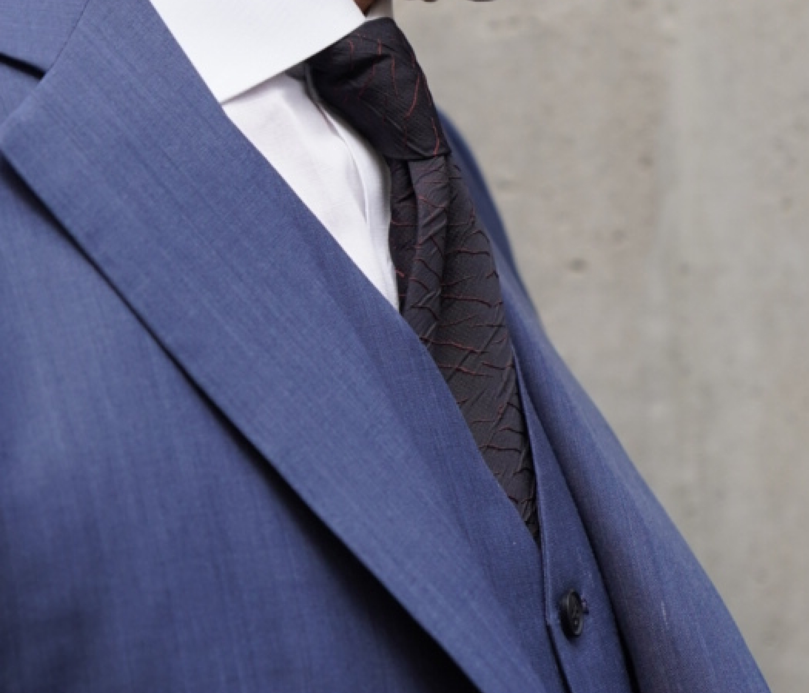
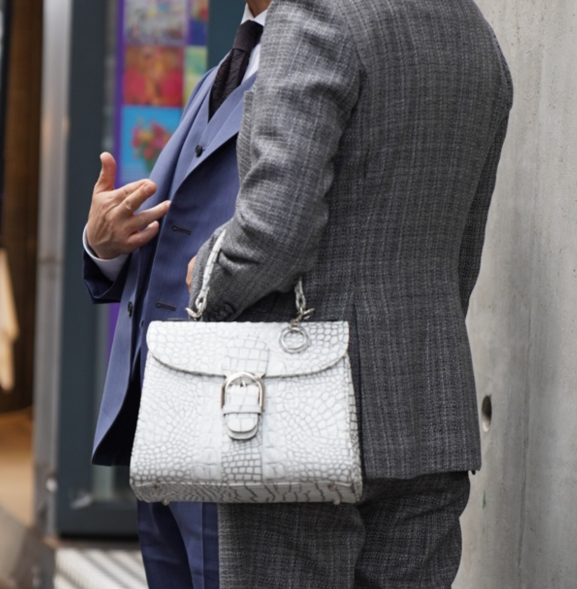
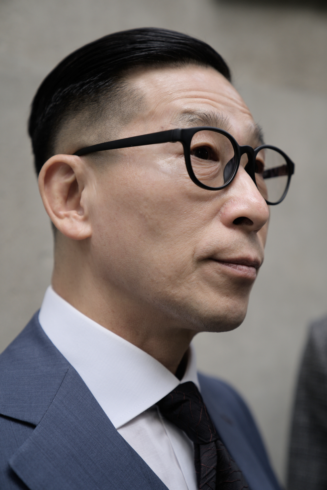

인사동 문화의 거리에서
- Lim Kyung seop
- Cho Mi sook
- 임경섭
- 조미숙

- 인터뷰 소개
- 작성일2023. 09. 23
- 위치인사동 문화의 거리에서
-
클래식한 정장 셋업과 맞춤 수제 구두로
분위기부터 압도되었던 - 인사동 거리를 돌아다니다가 저 멀리에서부터 눈에 확 돋보였던 부부가 있다. 클래식하고 우아한 룩으로 그들이 지나가는 거리는 보도블럭이 아니라 마치 하나의 잘 짜여진 런웨이를 보는 것 같은 기분이였다. 그분들에게 인터뷰를 요청하였고 흔쾌히 수락해 주셔서, 그들의 머리부터 발끝까지 디테일이 담긴 패션에 대하여 이야기를 나눴다.
-
Q. 인터뷰 응해주셔서 감사합니다.
간단한 자기소개 부탁드려요. -
임경섭 저는 지금 50대 후반의 길을 가고 있는 임경섭입니다.
조미숙 저도 지금 비슷하게 50대이고요. 조미숙입니다.

MOSS 앱에서 비슷한 상품 보러가기

MOSS 앱에서 비슷한 상품 보러가기

MOSS 앱에서 비슷한 상품 보러가기

MOSS 앱에서 비슷한 상품 보러가기
- Q. 계속 옷에 시선이 가게 되는데요.
혹시 오늘의 패션에 대한 간단한
설명과 포인트를 말해주실 수 있
나요?
- Q. 평소에도 옷을 구매하는데 있어서
본인만의 기준이 있나요?
- Q. 패션에 대한 본인만의 가치관이나
철학이 있으신가요?
- Q. 평소에 자주 방문하시는 곳이 있
다면 소개해 주실 수 있나요?
- 임경섭 오늘 저는 남색 쓰리피스 수트를 입었고, 패턴이 들어간 검은 넥타이와 갈색 스웨이드 구두로 포인트를 줬습니다. (웃음) 원래 이런 수트나 클래식한 옷을 좋아해서 이렇게 자주 입는 것 같아요.
- 조미숙 저는 남편이 주로 코디해줘서 입거나 그날 남편의 옷에 따라 맞춰 입어요. 오늘은 회색 정장이랑 초록색 스웨이드 구두, 그리고 흰색 레더 토트백을 포인트로 줬어요.
- 임경섭 (웃음) 저희 가족 모두 특정 브랜드에서의 구매는 잘 하지 않고 맞춤 제작 옷을 선호해요.
- 조미숙 저는 그냥 가끔 예쁘고 마음에 들면 살 때도 있어요. 이 신발도 제껀 맞춤은 아니고 그냥 산거에요.
- 개인적으로 나이에 제한을 두지 않고 젊은 트렌드에 맞게 입으려고 해요. 전체적으로 구색에 맞게 입는다?라고 할 수 있을 것 같아요. 나이를 먹었다고 해서 꼭 나이들게 입을 필요는 없으니까요. 저는 그렇게 생각해요.
- 임경섭 여기 인사동에 자주 오죠. (웃음) 제가 건축 관련 직업이라서 그런 걸 좋아합니다.
- 조미숙 어디를 가도 차려입고 가는 걸 좋아해서 (웃음) 저도 친구들하고도 인사동에 자주 오고 경복궁 쪽에도 전시를 많이 해서 자주 다녀요.
- Q. 나에게 있어서 옷을 한마디로 정의
한다면?

- Q. 옷을 감각있게 잘 입고 싶은 사람
들에게 한마디를 한다면?
- 임경섭 나에게 옷이란 젊음이다.
- 조미숙 나에게 옷이란 예쁜 것.
- 임경섭 옷을 잘 입고 싶으면 저는 보색과 색 대비가 중요한 것 같아요. 예를 들어 초록색을 입는다고 할 때 상의나 하의를 노란색 계통으로 입는 것처럼요. 아무리 멋있게 입어도 색 조화가 안 맞으면 별로인 것 같아요. 또, 면이면 면. 캐시미어면 캐시미어. 섞어서 입지 않고 재질을 통일해서 입는 것도 중요한 디테일인 것 같아요.
- 조미숙 남편이 말한 것들도 중요하긴 하지만 마음가짐도 중요해요. 내 주위 사람들 보면 나이도 있어서 그런 거 못 입겠다거나, 창피해하는 사람들도 있더라구요. (웃음) 잘 입으려면 많이, 다양하게 그리고 당당하게 입어야 하는 것 같아요.